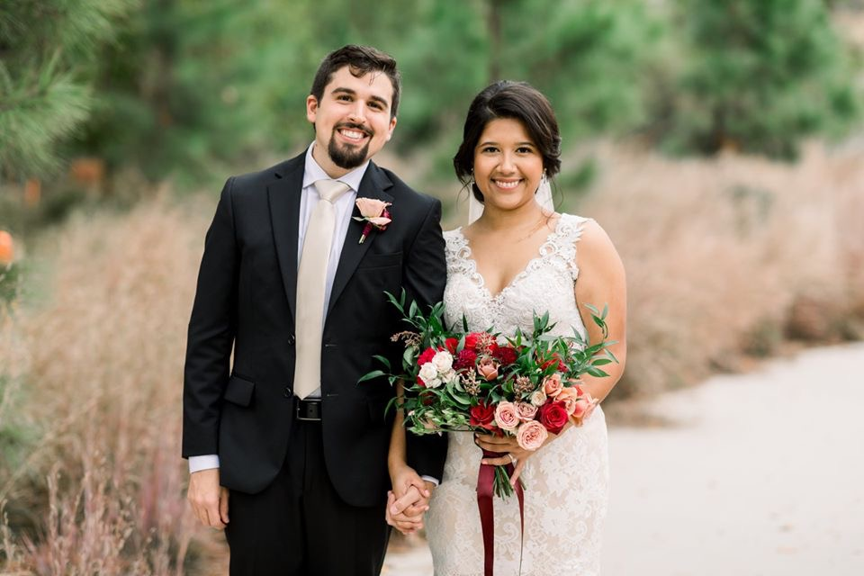

Hello! And thank you for wanting to get to know me a little better!
Where to start? So I was born in Florida to parents who immigrated from Mexico, but raised in GA most of my life, so I definitely consider myself a Georgia peach 🍑! I grew up in a VERY small town named Glennville, GA (for reference, its close to Savannah). I have one sister, Victoria, who is an English professor at a local community college. I also have 2 cats that you can learn more about in my pets page!
My alma mater is Georgia Southern University (GO EAGLES!) I have a bachelor's degree in biology 🧬🔬 and Spanish 🇪🇸.
:no_upscale()/cdn.vox-cdn.com/uploads/chorus_asset/file/6370621/GSAthleticsLogo__1_.0.jpg)
I recently relocated to Atlanta after marrying my best friend! We both love to travel and search for new and interesting places to eat around the city! I like to consider myself an up and coming foodie 🤤🌯🌭🍷.
In more recent news, I am currently in week 3 of a 14-week long coding bootcamp! So far, the journey has been challening but very fullfilling at the same time! Wish me luck!